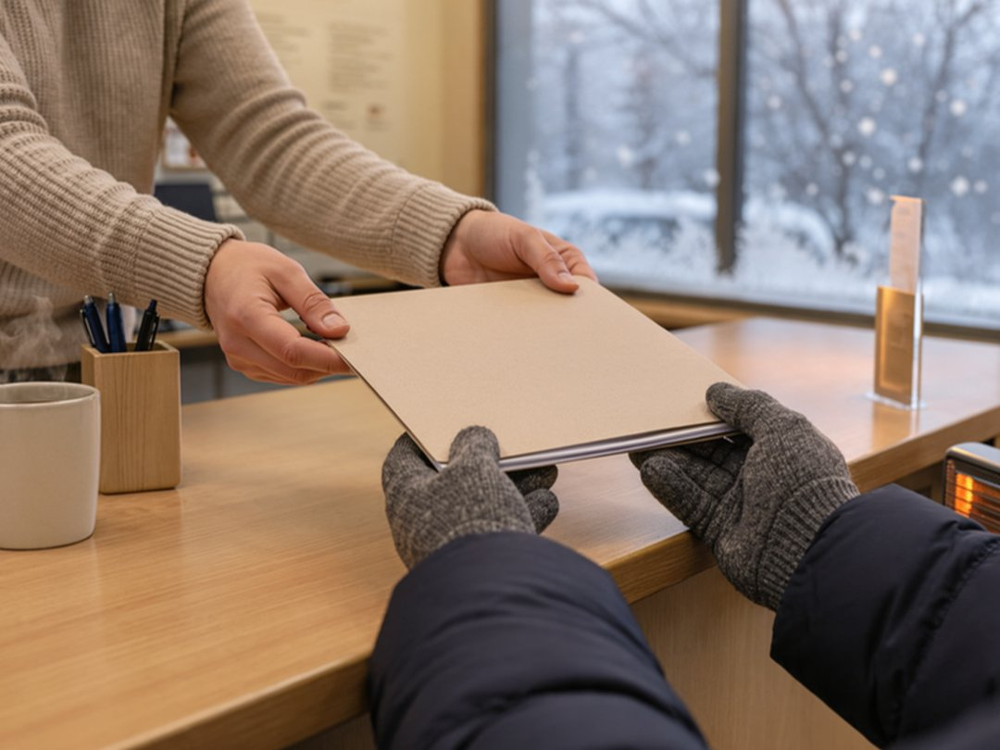

📷 사진 1 자리

▲ 겨울철 행정복지센터 상담 장면 · AI 생성 이미지
갑자기 형편이 어려워진 가구에 현장에서 30만 원을 먼저 주는 '우선 긴급지원'이 생겨요. 보건복지부가 10일 국무회의에 보고한 겨울철 취약계층 보호 대책에 들어 있어요. 다만 시작은 2027년 1월이고 누구나 받는 지원금도 아니에요.
▎30만 원, 누구에게 언제부터
대상은 당장 도움이 필요한 위기 상황이에요. 복지부는 분유나 기저귀 같은 생필품을 살 수 없는 경우, 월세가 밀려 집에서 나가야 할 날이 임박한 경우를 예로 들었어요.
이런 상황이라고 현장에서 판단하면 정식 심사를 다 거치기 전에 30만 원을 먼저 지원해요. 신청만 하면 똑같이 받는 돈이 아니라 담당 공무원의 현장 판단이 들어가는 구조예요.
| 구분 | 내용 |
|---|---|
| 시작 | 2027년 1월 |
| 금액 | 30만 원 우선 지원 |
| 예시 상황 | 생필품 구입 불가, 월세 체납으로 퇴거 임박 |
| 결정 | 현장 재량 판단 |
▎지금 급하면 기다려야 할까
아니에요. 30만 원 우선 지원이 1월부터일 뿐, 기존 긴급복지지원 제도는 지금도 있어요. 갑작스러운 위기로 생계가 어려워진 저소득층에 생계비 등을 지원하고 겨울에는 월 15만 원의 연료비도 더해 줘요.
생계가 막막하다면 1월을 기다리지 말고 지금 관할 행정복지센터나 시군구에 긴급복지 상담부터 받으세요. 내가 대상인지 모르겠다면 보건복지상담센터 129에 전화해도 돼요.
▎이번 겨울 함께 확인할 지원
같은 대책에 담긴 지원 가운데 많은 가구가 해당될 만한 것들이에요.
정부는 단전·단수, 관리비 장기 체납 같은 위기 징후 정보를 47종에서 50종으로 늘려 40만 명의 위기가구를 찾아낼 계획이에요. 주변에 도움이 필요한 이웃이 보이면 복지부의 '복지위기 알림' 앱으로 알릴 수 있어요.
'30만 원 지원'이라는 말만 퍼지면 지금 바로 받을 수 있는 돈으로 오해하기 쉬워요. 이 제도의 핵심은 금액보다 '심사 전에 먼저 준다'는 속도에 있고 그 속도가 필요한 사람은 1월을 기다릴 게 아니라 지금 있는 긴급복지 창구를 두드리는 게 맞아요.
우선 긴급지원의 세부 기준은 시행 전에 따로 안내될 예정이에요. 에너지바우처 같은 겨울 지원은 신청해야 받는 경우가 많으니, 이번 달 안내 문자부터 확인해 두세요.
▎함께 보면 좋은 이슈